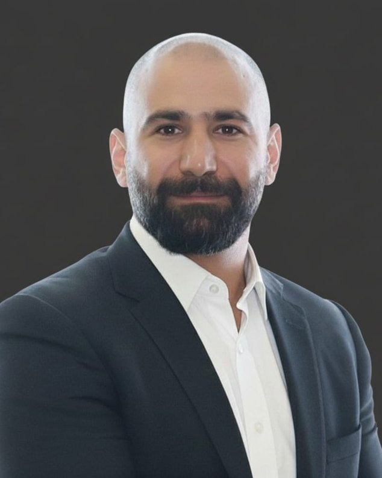

من نحن
قيادة تسويقية أولى، بلا طبقات وسيطة
بنيت التسويق وأدرته عبر قطاعات مختلفة — لا من عرض تقديمي، بل من داخل الشركة نفسها. وُجدت نوردنوفا كي تحصل الشركات على هذه الخبرة مباشرة، دون توظيف فريق كامل أو انتظار وكالة.

لماذا نوردنوفا
أنا نزار أبو أحمد — 18 عاماً في بناء التسويق وإدارته عبر الخليج والشرق الأوسط، شملت الصناعة والسلع الاستهلاكية وتقنية التعليم والرعاية الصحية والبرمجيات كخدمة والعقارات. أدرت أكثر من 100 مليون درهم/ريال من الميزانيات، وعملت في أكثر من 10 دول، وقدّمت الاستشارة لأكثر من 50 علامة تجارية ومؤسساً — من مصنّعين إقليميين إلى مشاريع تقنية تعليم في مراحلها الأولى.
جاء هذا الاتساع من الجلوس داخل الشركة، لا من مراقبتها من الخارج: 7 سنوات في إدارة التسويق والاتصال عبر نطاق يغطي 10 دول في الشرق الأوسط وأفريقيا لدى Veolia Water Technologies، وقيادة تسويق إقليمية في National Paints، ومشروع شاركت في تأسيسه في دبي، والآن عمل كمدير تسويق جزئي لعملاء من الشركات والمؤسسين مباشرة.
تعمل نوردنوفا بنموذج المشغّل الواحد — شخص واحد بخبرة عالية يقدّم مخرجات فريق تسويق كامل، مدعوماً بأدوات تعتمد الذكاء الاصطناعي أولاً وشبكة إقليمية مختارة بعناية. معظم الشركات لا تحتاج المزيد من الآراء التسويقية. تحتاج من تحمّل فعلاً مسؤولية النتيجة، ويستطيع النزول إلى التفاصيل حين يستدعي الأمر.
هذا ما بُنيت نوردنوفا لتفعله.
بلا طبقات وكالات. وبلا تسليم لمبتدئين.
حين تعمل مع نوردنوفا، فأنت تعمل معي — مباشرة، من الاستراتيجية حتى التنفيذ. أستعين بمتخصصين ومورّدين عند الحاجة، لكنني أبقى المسؤول عن النتيجة، لا عن التوصية فقط.
خبرة 360 درجة
العلامة والنمو والعمليات والتوظيف ومسؤولية الربح والخسارة عبر 18 عاماً، فأعرف ما هو الأداء الجيد في كل وظيفة، لا في الوظيفة التي أركّز عليها حالياً فقط.
خلفية متعددة القطاعات
الصناعة، والسلع الاستهلاكية، وتقنية التعليم، والرعاية الصحية، والبرمجيات كخدمة، والعقارات. وما نتعلمه في صناعة يحلّ مشكلات في أخرى بانتظام.
مُختبَر في بيئة الشركات الناشئة
شاركت في تأسيس مشروع، وقدّمت الاستشارة لمؤسسي تقنية تعليم وعلامات ثقافية في مراحلهم الأولى حول دخول السوق والمنتج الأولي — أعرف كيف يُبنى التسويق من الصفر، لا كيف يُحسَّن القائم فقط.
شبكة إقليمية
خبرة ميدانية في أكثر من 10 دول عبر الخليج والشرق الأوسط تعني توظيفاً أسرع، واختيار مورّدين أسرع، وتنفيذاً أسرع.
نموذج تشغيل يعتمد الذكاء الاصطناعي أولاً
نموذج مشغّل واحد يقدّم مخرجات فريق كامل بمفرده، بالاعتماد على أدوات تضع الذكاء الاصطناعي أولاً للتحرك بالسرعة التي يحتاجها العملاء.